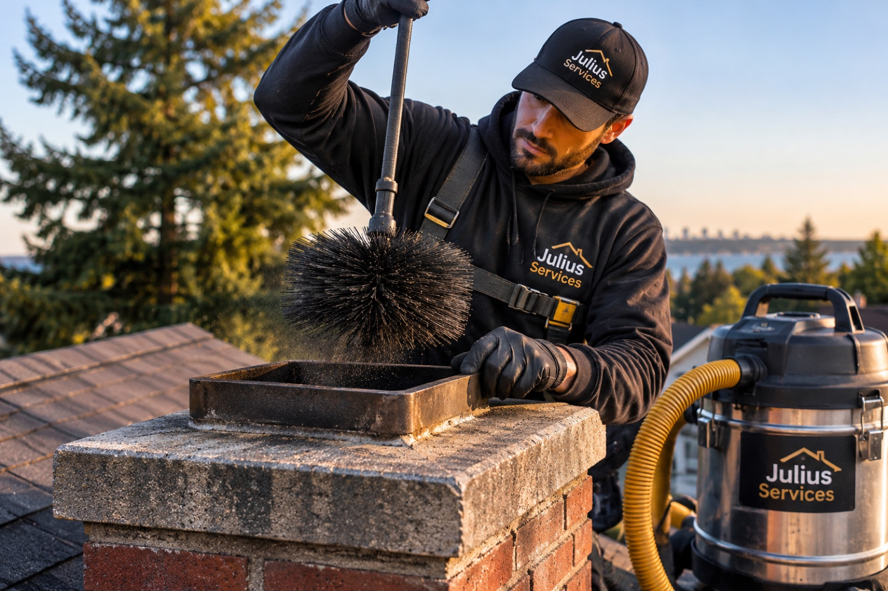
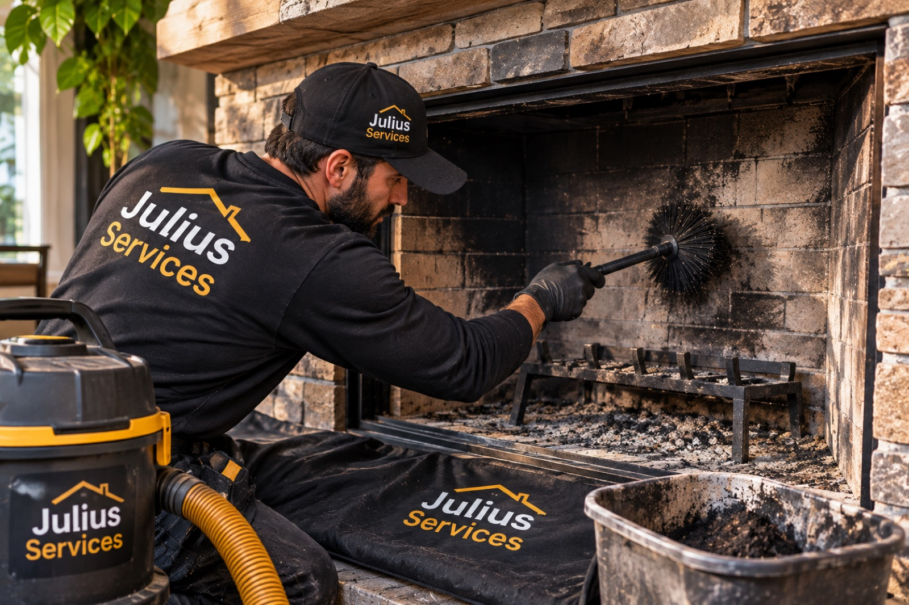

Open fireplaces
Traditional masonry fireplaces and factory-built fireplaces. The flue, smoke chamber, damper, and firebox are all cleaned.
- Masonry and prefab
- Flue, damper, and firebox
- Checked for cracks and gaps

Chimney sweeping
Soot and creosote build up a little with every fire. We sweep the flue from top to bottom, clean the firebox and smoke chamber, and check the parts you can't see, without leaving dust in your living room.
Chimneys swept and inspected, so every fire burns the way it should.
Gutters and roofs kept clear, so rain goes where it belongs.
Floors covered, work areas contained, and nothing left behind.
Photos of what we find, and a written price before any repair.
What's included
A sweep is more than a brush down the flue. Here is what's covered on every visit.
The full length of the flue brushed with rods and brushes sized to your liner, removing soot and creosote.
Ash and soot cleaned out, and the firebrick and mortar joints checked for cracks and gaps.
The area above the damper, where debris and creosote collect, brushed and vacuumed out.
Cleaned and tested to make sure it opens fully and closes tight.
A look at the cap, crown, and flashing from the roof when it is safe to get up there.
Drop cloths from the door to the hearth, and furniture near the fireplace covered.
A high-filtration vacuum runs the whole time, so soot goes in the canister and not in the room.
Photos and notes on the condition of your chimney, and anything worth watching or repairing.
What we sweep
Different appliances collect soot in different places. Tell us what you have when you book, and we'll bring the right brushes.
Traditional masonry fireplaces and factory-built fireplaces. The flue, smoke chamber, damper, and firebox are all cleaned.
Stoves and inserts burn hotter and slower, which can glaze the liner with hard creosote. We sweep the liner and clean the baffles and connector pipe.
Pellet vents are small and clog with fine ash. We clean the vent pipe, the exhaust path, and the ash traps inside the stove.
A closer look
A look at what this service involves.

Fireplace cleaningHow it works
Four of the six steps happen before any work begins, so you always know what's being done and why.
Tell us what you need and where you are. We confirm a day and an arrival window.
Floors and furniture near the fireplace are covered, and outdoor work areas are set up safely.
Before any tools come out, we check the chimney, gutters, roof, or vent and take photos.
You see what we found. If anything beyond the booked service is needed, you get the price first.
The job you approved, done carefully and by the book.
We clean up, haul away debris, and walk you through what was done, with photos.
FAQ
Anything else, ask us when you book.
The National Fire Protection Association standard (NFPA 211) calls for chimneys, fireplaces, and vents to be inspected at least once a year and cleaned when needed. If you burn wood regularly through the winter, plan on a sweep every year.
Late spring through early fall. The chimney is cool, the weather is dry enough for roof access, and you'll be ready before the first cold night. Fall is the busiest season, so it pays to book early.
It shouldn't. We cover the floor and nearby furniture, seal off the fireplace opening while brushing, and run a high-filtration vacuum the whole time.
Common signs are a strong smoky or campfire smell from the fireplace, smoke coming back into the room, black flakes falling into the firebox, or a fire that's hard to start and keep going. If it's been more than a year, it's time for a look either way.
Yes. We need to get to the fireplace or stove inside the house, and we'll show you what we found before we leave.
More services
Many of these can be done in the same visit.
Tell us what your home needs. We'll confirm a time and take it from there.